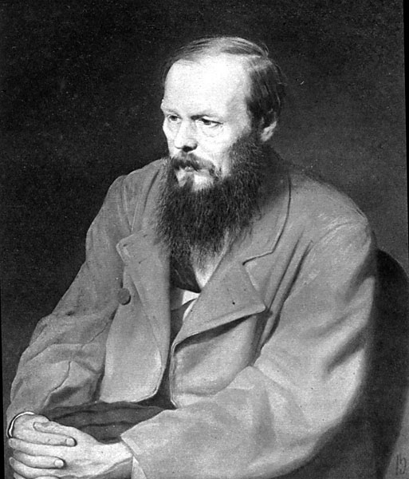

You want to Major or Minor in Linguistics
To find out more, contact linginfo@ling.ucsd.edu :)

All grades are final seven days after release
All other grades are final at the start of the exam
Double-check everything next week!
Clicker and SONA scores are being sorted soon
https://savethevowels.org/exam has all the information you want
We’ll have a study session next Week (Wednesday 3-6pm in AP&M 4301)
Your Linguistic Future
Dostoevsky, Case, and Translation Theory
A Life in Language
The Secret to Great Linguistic Analysis
You want to Major or Minor in Linguistics
To find out more, contact linginfo@ling.ucsd.edu :)

Serial language learners
Language Analyzers
Easily distracted by odd language use
People fascinated by the differences and similarities among languages
If any of those things sound like you, you might be a linguist
I was going to be a translator!
Then Linguistics hunted me down.
How a language marks who did what to whom
Each case marker corresponds to a grammatical role
Nominative Case - “The Subject”
Accusative Case - “The Object”
sobaka vidye-la koshk-u
dog.NOM see-SG.FEM.PST cat-ACC.FEM
“The dog saw the cat.”
koshka vidye-la sobak-u
cat.NOM see-SG.FEM.PST dog-ACC.FEM
“The cat saw the dog.”
Ya tyebya vizh-u
I.NOM you.ACC see-1SG
“I see you”
Ti myenya vid-ish
you.NOM I.ACC see-2SG
“You see me”
Niloo - NOM, Turtle - ACC
Niloo - ACC, Turtle - NOM
Niloo - NOM, Turtle - NOM
Niloo - ACC, Turtle - ACC
Niloo - ACC, Turtle - NOM
Niloo - NOM, Turtle - NOM
Niloo - ACC, Turtle - ACC
I see him
I-NOM see he-ACC
He sees me
He-NOM see-3sg I-ACC

(… and I didn’t think I was a linguist)
Nominative Case - “The Subject”
Accusative Case - “The Direct Object”
Dative Case - “The Indirect Object or Recipient”
Genitive Case - “The Possessor (and more)”
Locative Case - “The Location (and more)”
Instrumental Case - “The Tool (and more)”
Marks possession
Marks the location of events
Marks an object being used
Andres pish-et karandash-om
Andres-NOM write-3sg pencil-INST
“Andres writes with a pencil”
Ya yem borscht so smetanoy
1sg-NOM eat borscht-ACC with sour.cream-INST
“I eat borscht with sour cream”
Marks the indirect object, or recipient of an item
Kevin dayot tsvet-i Lis-ye
Kevin-NOM give.3sg Flowers-ACC.PLUR Lisa-DAT
“Kevin gave Lisa flowers”
Enchilad-i mne da-la Niloo
Enchilada-ACC.PLUR 1sg.DAT give-PAST.FEM Niloo-NOM
“Niloo gave me Enchiladas”
Ya pomoga-yu Kevinu
1sg.NOM help-present.1sg Kevin-DAT
“I’m helping Kevin”
Mne zvoni-l Barack Obama
1sg-DAT call-past.masc Barack Obama-NOM
“Barack Obama called me”
Jony - ACC, Dieter - DAT, food - NOM
Jony - NOM, Dieter - DAT, food - ACC
Jony - NOM, Dieter - ACC, food - DAT
Jony - DAT, Dieter - ACC, food - NOM
Jony - NOM, Dieter - ACC, Pellets - DAT
Jony - DAT, Dieter - ACC, Pellets - NOM
Nominative Case - “The Subject”
Accusative Case - “The Direct Object”
Dative Case - “The Indirect Object or Recipient”
Genitive Case - “The Possessor (and more)”
Locative Case - “The Location (and more)”
Instrumental Case - “The Tool (and more)”
It’s actually way more complicated than this!
(Whoa! That looks like some of the argument roles we saw in lexical semantics!)
I saw him
… but Dative? We just can’t even.
This is a problem for translators.


(“Crime and Punishment”)
(Upokoy gospod myortvikh, a zhivim eshyo zhit!)
“God give peace to the dead, the living have still to live!†- Constance Garnett
“May the Lord grant rest to the souls of the dead, and let life be the realm of the living!†- David McDuff
“May the Lord grant rest to the dead, but the living have still got to live!†- Pevear and Volokhonsky
“God rest the dead, but still live alive!†- Google Translate (2018)
“God rest the dead, and the living still live!†- Google Translate (2023)
Upokoy gospod myortvikh…
out-rest-IMPERATIVE God-NOM.sg dead-ACC.pl
The “u-†means that the rest is “from here”.
The verb is a command, to God.
The dead are not “recieving†rest (dative), but they’re being rested (accusative).
Upokoy gospod myortvikh…
out-rest-IMPERATIVE God-NOM.sg dead-ACC.pl
“God give peace to the dead…†- Constance Garnett
“May the Lord grant rest to the souls of the dead…†- David McDuff
“May the Lord grant rest to the dead…†- Pevear and Volokhonsky
“God rest the dead…†- Google Translate
…a zhivim eshyo zhit
but living-DAT.pl still to.live
The act of living is what continues
The living are not doing the living.
…a zhivim eshyo zhit
but living-DAT.pl still to.live
“…, the living have still to live!†- Constance Garnett
“…, and let life be the realm of the living!†- David McDuff
“…, but the living have still got to live!†- Pevear and Volokhonsky
“… but still live alive!†- Google Translate (2018)
“… and the living still live!†- Google Translate (2023)
“God, take the dead and rest them, but those living still are given a life to live”
… but that’s a terrible English sentence.
“God, take the dead and rest them, but those living still are given a life to live”
“God give peace to the dead, the living have still to live!”
“May the Lord grant rest to the dead, but the living have still got to live!”
“God rest the dead, and the living still live!”
I have no opinion here.
“God, take the dead and rest them, but those living still are given a life to live†- Will
“God give peace to the dead, the living have still to live!†- Garnett
“May the Lord grant rest to the dead, but the living have still got to live!†- Pevear and Volokhonsky
“God rest the dead, and the living still live!†- Google Translate
You can’t capture Russian nuance in English, and vice versa
All translations “favor†either the original or new language
Good translators know to stop worrying about the details so much and just language
Translation Theory is the branch of Linguistics that struggles with these issues
“How the heck is anybody supposed to translate anything?”
“Is truly accurate translation a thing?”
“How could I even tell if I was ‘close enough’?”

Then Morphology and Syntax
Then Phonology
LIGN 8’s Equivalent
Then Semantics, then Pragmatics
Then some independent studies
I started looking at Grad schools
This is not necessarily the right choice for many, but it was for me
I got into one of them
Only one ğŸ˜
(My application was hot garbage, though!)
Phonetics
Phonology
Morphology
Syntax
Semantics and Pragmatics
Field Methods
Computational Linguistics
Language Acquisition
Diachronic Linguistics
Deeper explorations of phonetics and phonology
Statistics
Seminars are a thing!
Every two years (It’s at UMass Amherst in Summer 2023!)
Take courses from amazing professors in interesting topics
As a TA or Graduate Instructor
Working on or managing research projects
You’ll write large papers, alongside your coursework
A large research project where you need to advance the knowledge of the field (just a little!)
Mine was ‘On the Acoustical and Perceptual Features of Vowel Nasality’
Time to work on your own research
Helping other folks work on theirs
Advising Grad Students and Undergrads
Sometimes teaching courses
Time to get some publications and grow as a scholar
Time to gain experience for the job market
“Oh, you’re a linguist? Cool! How many languages do you speak?!”
Lots of folks need linguists, but very few people know that they do or what we do!
We’re called “Ontologists”, “Natural Language Specialists”, “Customer Feedback Analyst”, “Language specialist”, “Translation Director†and many, many more
Industry loves Linguists, as we’re great at patterns
Linguists have experience with language data, not just numbers
This is where the CSS program can help!
Text to Speech, Speech Recognition, NLP, and more!
Google, Facebook, Apple, Amazon, and more hire and work with linguists!
The NSA/CIA/FBI (and more!) want linguists for analysis
Translation and language teaching like at the DLIFLC
Everybody wants people to teach English as a Second Language
Have language, will travel? Have job!
Speech Pathologists help adults and children having issues with communication, speech, swallowing, and voice.
Audiologists help test, diagnose, and address many hearing disorders, and work with people to find treatments (e.g. hearing aids) which address their needs and desires.
Both are steady, well-paid, and in demand jobs!
For these careers, consider our Speech and Language Sciences Major!
PostDocs are increasingly common
Also administrative and lab-management positions
… but lots of folks want to be a Tenure-Track Professor
You have job security (if you don’t screw up!)
You’ll do research
You’ll teach
You’ll do administrative stuff
You’ll fight for grant money
… but you’ll do all of it in pursuit of a field you love

There will be 2-5 jobs per year in your subfield at well-known schools. Total.
Competition is fierce
You have to love teaching
“Wait your turn, you only need one job”
You’re going where the work is
You need to be able to tread water for a few years
You’re taking a vow of fiscal renunciation during Grad School
| ### Your life may not be like mine |
| - You may choose industry over academia |
| - You may choose to pursue Linguistics as a component of a different career elsewhere |
| - You may combine your love of Language with your love of something else |
| - You may even be able to convince yourself that you’re not a linguist |
Maybe you’ll go down the rabbit hole
Maybe this class will do for you what 101 did for me
… and you’ll see the true beauty of language
Perhaps as part of your teaching or research, if you decide to go the academic route
Maybe in industry or defense, if that’s your path
Maybe for fun, on the weekends
You’ll want to do it well!
Many not until a post-doc
Some, not until they’re full professors
Some poor souls never figure it out!
… but you’ll know it today!
| Russian | English | Russian | English | Russian | English |
|---|---|---|---|---|---|
| djelat | ‘to do’ | pit | ‘to drink’ | staret | ‘to grow old’ |
| djelaju | ‘I do’ | pju | ‘I drink’ | stareju | ‘I grow old’ |
| djelajet | ‘(s)he does’ | pjet | ‘(s)he drinks’ |
starejet |
‘(s)he grows old’ |
… and see the beauty of language
Wherever you may go